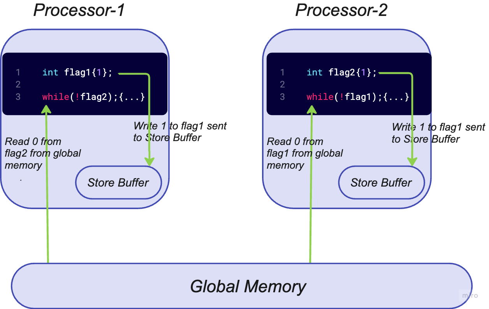
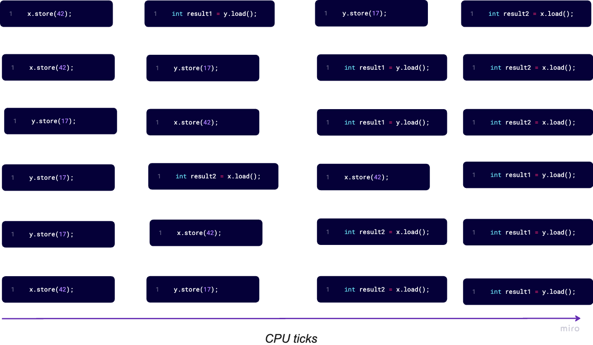

Introduction
Atomic operations are indivisible. Consider, for instance a shared variable counter that is initialized to 0. Consider the assembly instructions corresponding to the increment operation count++.
Look at the assembler code generated by the compiler and the instructions the CPU executes.
counter:
.zero 4
main:
push rbp
mov rbp, rsp
mov eax, DWORD PTR counter[rip]
add eax, 1
mov DWORD PTR counter[rip], eax
mov eax, 0
pop rbp
retThe code increments a global counter. The statement on line 6, copies the value stored in the counter to the eax register, line 7 adds 1 to the value stored in eax, and finally line 8 copies back the contents of the eax register to the counter variable. So, a thread could execute line 6 and then be scheduled out, and another thread execute all threee instructions after that. When the first thread finishes increment the result, the counter will be increment just once and thus the result will incorrect.
The following code does the same: it increments a global counter. This time, though, we use an atomic type and operations.
I will explain the std::atomic<int> type and the atomic increment operation later. The generated assembly code is the following:
Just one instruction has been generated to add 1 to the value stored in the counter variable. The lock prefix here means that the following instruction (in this case add) is going to be executed atomically. Hence, a thread cannot be interrupted in the middle of incrementing the counter.
Atomic operations allow threads to read, modify and write indivisibly and can also be used as synchronization primitives. Atomic operations must be provided by the CPU (as in the lock add instruction).
Non-Blocking Data-Structures
Data-structures synchronized with locks are called blocking data-structures because threads are blocked (by the operating system), waiting until the locks become available.
Data-structures that don’t use locks are called non-blocking data structures. Most (but not all) of them are lock-free.
A data-structure or algorithm is considered lock-free if each synchronized action completes in a finite number of steps, not allowing indefinite waiting for a condition to become true or false.
The types of lock-free data structures are the following:
Obstruction-free: A thread will complete its operation in a bounded number of steps if all other threads are suspended.
Lock-free: Atleast one thread will complete its operation in a bounded number of steps while multiple threads are working on the data-structure.
Wait-free: All threads will complete their operations in a bounded number of steps while multiple threads are working on the data-structure.
Memory Access
Memory order refers to the order in which memory(that is, the variables in a program) are accessed. Memory can be either read or write(load and store). But, what is the actual order in which the variables of a program are accessed? For the following code, there are \(3\) points of view: the written code order, the compiler-generated instructions order, and finally, the order in which the instructions are executed by the CPU. These \(3\) orderings can all be the same or (more likely) different.
The first and obvious ordering is the one in the code.
The func_1 function first adds \(1\) to the variable a, then adds \(10\) to the variable b and finally adds \(2\) to the variable a. This is our intention and the order in which we define the statements to be executed.
When compiling the code to assembly, the compiler may change the order of the statements to make the generate code more efficient provided the outcome of the code execution is unchanged. For example, with the preceding code, the compiler could either do the two additions with variable a first and then the addition with variable b, or it could simply add 3 to a and 10 to b.
If we define func_2 as:
the compiler generates:
In this case, the CPU could execute the instructions out of order, as there is no dependency among the operations.
Consider func_3(int&, int&) defined as:
In this case, the operation on b depends on the previous operation on a, so the compiler cannot reorder the statements, and the generated code will be like the code we write (same order of operations).
func_3(int&, int&):
mov eax, DWORD PTR [rdi]
lea edx, [rax+1]
add eax, 11
mov DWORD PTR [rdi], edx
add DWORD PTR [rsi], eax
add DWORD PTR [rdi], 2
retTo conclude, the source code order, the compiler generated object-code order and the actual exection order on a multi-core CPU will differ.
Memory Model
Typically, each core in a multi-core processor has dedicated store buffers, its own L3 cache. A pair of cores often share the L2 cache. All cores share the L1 cache and the global main memory. So, the below picture is a more accurate mental model of a modern microprocessor.

Consider 2 globally declared atomic flags flag1 and flag2. Assume that thread_1 executes on processor-1 and thread_2 executes on processor-2 and all reads and writes are atomic.
Essentially, thread_1 declares its intent to enter a critical section by setting flag1 = 1. A flag1.store(1) operation writes flag1 = 1 to the store buffer. Concurrently, thread_2 declares its intent to enter the critical section by setting flag2 = 1. A flag2.store(1) operation writes flag2 = 1 the processor’s store buffer.
thread_1 reads the value of flag2 from the global main memory, which is 0 (since processor-2’s buffer has not been flushed). Hence, the predicate !flag2 is satisfied and the thread_1 enters the critical section. Similarly, thread_2 reads the value of flag1 from the global main memory, which is also 0 and enters the critical section at the same time.
\(1\) nanosecond later, the contents of the store buffers on processor-1 and process-2 are flushed to main memory.
Thus, we need synchronization and some form of ordering to prevent undefined behavior.
Sequential consistency
std::memory_order_seq_cst has two implications. The operations of a program(thread) will always be executed in source code order.
There is a global order of events, and all threads observe the same global order.
#include <iostream>
#include <atomic>
#include <thread>
std::atomic<int> x = ATOMIC_INT_LOCK_FREE;
std::atomic<int> y = ATOMIC_INT_LOCK_FREE;
int main() {
std::thread t1(
[&]() {
x.store(42);
int result1 = y.load();
}
);
std::thread t2(
[&]() {
y.store(17);
int result2 = x.load();
}
);
}Sequential ordering is also the default memory ordering.
x.store(42) will always be performed before y.load(). y.store(17) will always be performed before x.load(). That is the guarantee of the sequential consistency. And each thread sees operations of the other thread in the same order. This respects our intuition.
How many ways exist to perform these 4 operations? Extremely easy!

Acquire-Release Semantic
References
- The memory model in C++ - Rainier Grimm, Meeting C++ 2016.